国企组织信息
平台部分
如何提供报错日志？
\jstack\log下的logging.log文件。
PS:给开发人员提供日志时，请重现几次错误操作，让错误信息多记录几次，以便开发人员查找错误信息。
PS:定期清理日志文件，不要让日志文件太大。超过20M时，打开日志文件会十分影响性能。
运维培训
如何获取补丁及安装补丁等等
已推出补丁下载工具，推荐使用补丁下载工具获取补丁！
补丁工具下载路径已迁移至
\\10.110.80.110\产品服务器\内部自制工具安装盘\GS Cloud运维工具
Cloud产品基础知识
补丁信息文件：\jstack\patchinfo\patchallmanagementlog.json。2103版本后jstack目录改名为server。
过期的补丁不能安装
临时增量是针对当前项目需求，制作的临时补丁文件，仅适用于当前时间当前项目使用！不具有普适性，不能过期部署和部署其他环境！
DBO部署工具：\tools\dbodeploy_java,2103版本后目录为\tools\deploy\dbo\startup-win.cmd
Data文件导入工具：\tools\dataimport_java,2103版本后目录为\tools\deploy\data\startup-win.cmd
DBO或者Data文件可随意放置到一个目录，导入过程中会让输入文件目录。请输入年度选项直接回车即可。如下图所示：
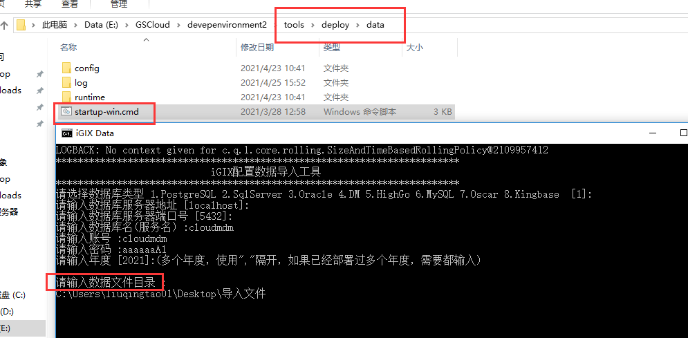
Data文件导出工具(配置数据导出工具)：\10.110.85.184\iGIX发布\依赖组件
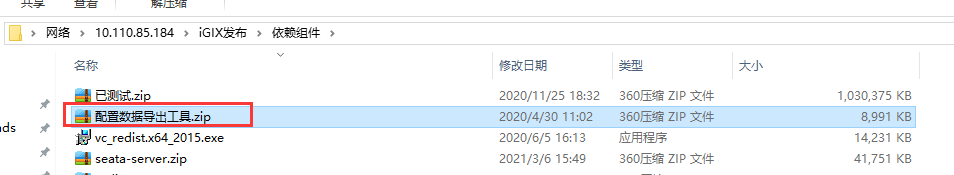
组织信息部分
组织信息权限使用
下面详细介绍组织信息维护常用的分配数据权限方式。
常用的分配方式，不是必须这样！
常用的分配方式，不是必须这样！！
常用的分配方式，不是必须这样！！！
组织岗分配数据权限
组织岗是以岗位为核心的数据隔离分配方式：不同的岗位分配不同的数据权限，同一岗位下的用户拥有相同的数据权限。
功能组分配组织信息权限
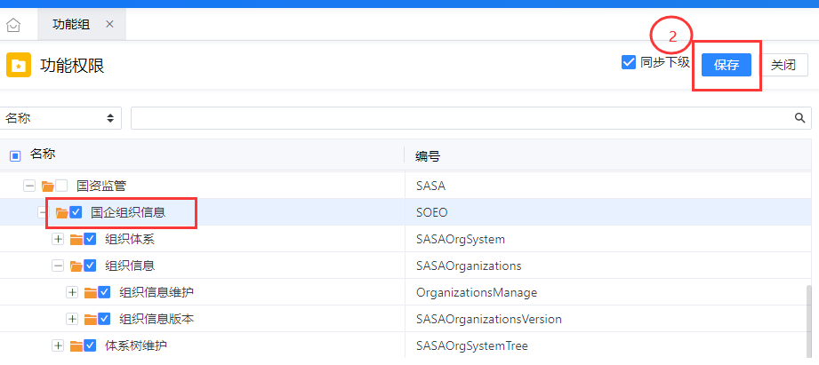
岗位分配功能组和数据权限
分配功能组：


分配数据权限：
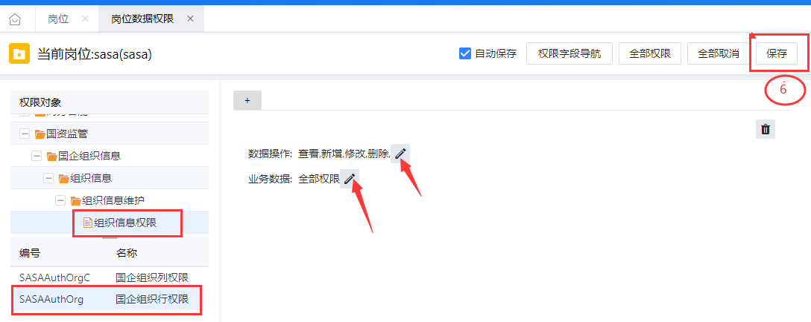
用户分配岗位


注意事项
组织岗分配数据权限，国企组织行权限不能设置维度。
维度可删除，但是不能删除行权限！
维度可删除，但是不能删除行权限！！
维度可删除，但是不能删除行权限！！！

通用岗分配数据权限
通用岗一般是以用户为核心的数据分配方式，同一岗位下不同用户可拥有不同的数据权限。
国企组织行权限启用维度

功能组分配组织信息权限
分配方式见1.1.1节组织岗分配数据权限。
岗位分配功能组和数据权限
分配功能组方式见1.1.2节分配功能组。
分配数据权限：
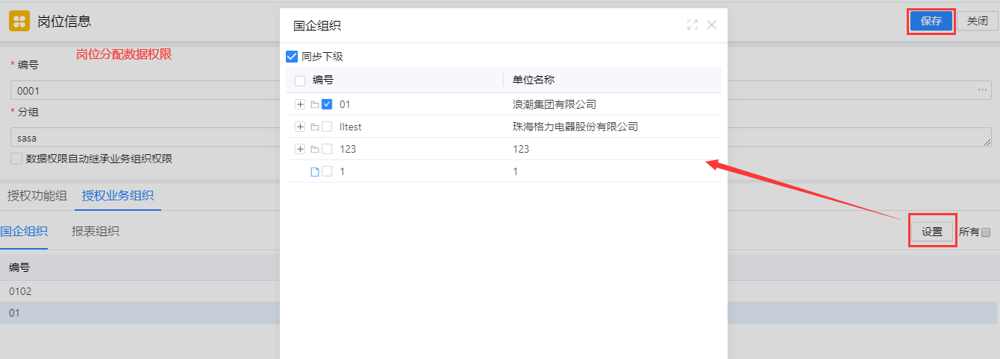
用户分配岗位和数据权限
用户分配岗位：
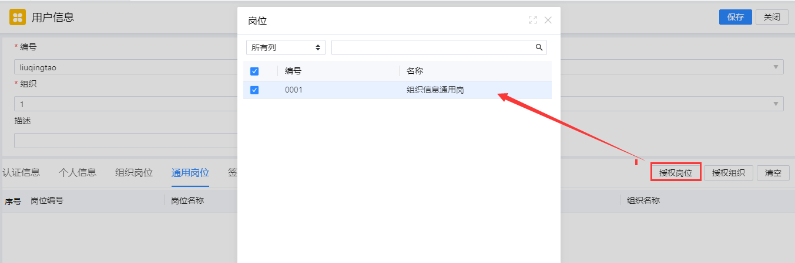
用户分配数据权限：

权限自动继承方式分配数据权限
问：新加了一条数据，保存后刷新页面数据不见了，为什么？
答：没有给数据分配权限
问：有没有一种方式能让用户自动继承新添加的数据权限？
答：针对子级数据时可以，但是使用有限制，会有权限扩大的隐患。
使用方法：组织岗 + 维度 + 权限规则
当前授权方式会造成权限扩大，即当前岗位下的所有用户都会拥有新加数据权限！
当前授权方式会造成权限扩大，即当前岗位下的所有用户都会拥有新加数据权限！！
当前授权方式会造成权限扩大，即当前岗位下的所有用户都会拥有新加数据权限！！！
国企组织行权限启用维度
【定制平台】——【业务定制平台】——【权限定义】——【权限字段】
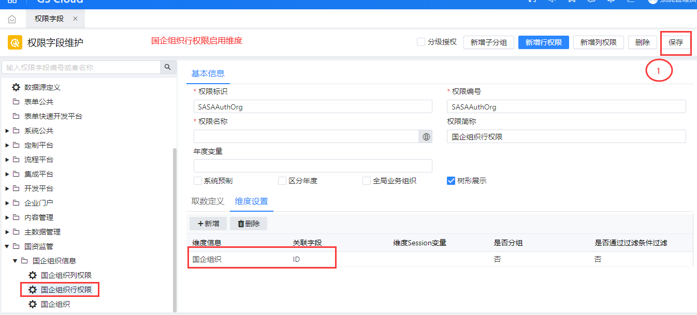
国企组织全局权限启用权限规则
【定制平台】——【业务定制平台】——【权限定义】——【权限字段】
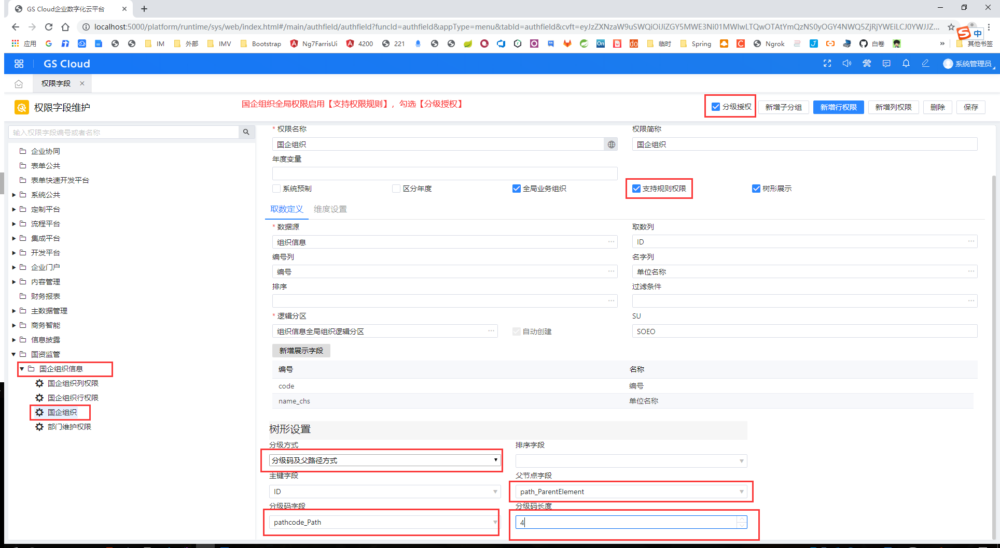
组织岗授权
组织岗中授权业务组织
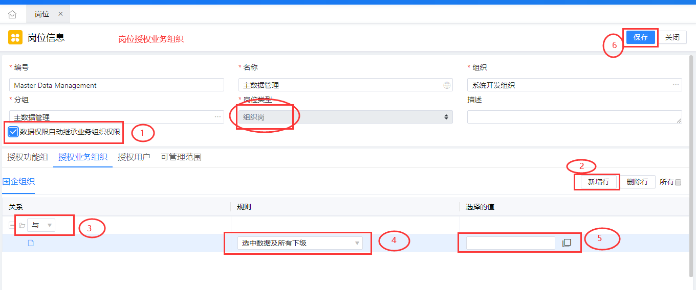
组织岗授权数据权限
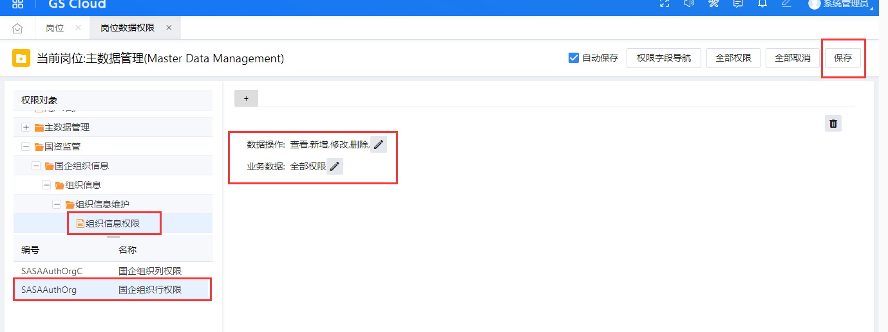
用户授权岗位
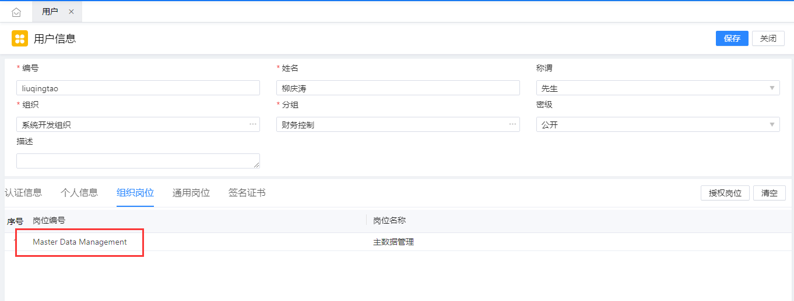
当前授权方式可以使用但不推荐！请慎重考虑风险问题！
当前授权方式可以使用但不推荐！请慎重考虑风险问题！！
当前授权方式可以使用但不推荐！请慎重考虑风险问题！！！
其他方式
分配权限的方式有很多，各种方式可交错使用，此处不做额外介绍，请配合权限基础知识使用。
组织信息维护打开为什么没有数据？
检查组织信息表
检查组织信息表（ SASAOrganizations）,执行以下SQL来查询:
SELECT ID,Code AS 单位编号,Name_chs AS 单位名称,Path_ParentElement AS 父节点,Path_Layer AS 级数,Path_IsDetail AS 明细,Path_Sequence AS 顺序号,PathCode_Path AS 分级码,PathCode_layer AS 分级码级数
from sasaorganizations
Order by 分级码;
正常情况下，分级码一列应该全部有值且是规律的。如出现分级码为NULL的情况，需要在【分级信息维护】中执行【初始化分级码】。
检查组织信息的数据权限
新增的数据不会继承权限！
新增的数据不会继承权限！！
新增的数据不会继承权限！！！
数据权限必须经过分配权限的过程。
导入导出
【定制平台】——【业务定制平台】——【数据导入导出】——【导入导出规则】
在以上菜单中配置导入导出模板。
数据导入
下面模板后，请仔细阅读首页【填写指南】，里面针对模板中导入的每一个字段做了详细解释。
导入需要注意分级码信息的填写，多数报错都是由此处引起的，分级码介绍请阅读什么是分级码
数据抽取转换异常
导入报错时，请查看后台报错日志，通常报错情况如下：
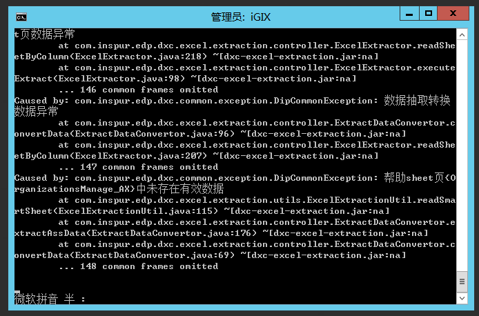
查找对应sheet页即可排查问题。
执行保存数据库逻辑发生异常
此问题通常是导入导出规则中导入字段配置出现问题。打开日志文件，搜索执行保存数据库逻辑发生异常，即可发现引起报错原因。如下图所示：
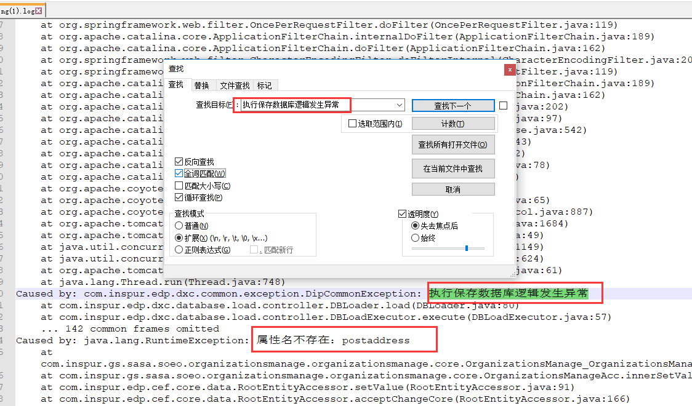
解决方法：在导入导出规则中，去除勾选报错字段。推荐也执行同步实体变更，获取最新字段信息，配置导入模板。或者联系开发提供最新版本导入规则也可。
数据导出
有特定的需求或者对导出的Excel文件有特殊要求，在【导入导出规则】无法配置时，需要联系二开老师处理或者将需求反馈至开发处理。
什么是分级码
树的分级通常有两种情况，即分级码分级和父节点分级。
分级码分级
分级码分级由分级码(path)、级数(layer)和是否明细(isDetail)组成。分级码4位一级，36进制，通常以0001为第一级开始；级数即该数据是第几级；是否明细表示该数据是否有子级，有子级非明细0，无子级明细1。示例如下：

父节点分级
父节点分级由父节点(parentElement)、级数(layer)、是否明细(isDetail)、顺序号(sequence)组成。父节点存储该数据的上级ID。示例入下：

删除报错
数据引用检查时发生异常
通常会有如下报错方式：

排查思路：多执行几次删除，让报错信息多记录几次，打开日志文件，搜索 对应的程序集和元数据 ，通常会有如下信息：

即可得知报错缘由，联系对应组开发即可。
注： 已上述报错举例：ConfigID“com.inspur.gs.sas.parl.parlmatter.ParlMatter”
sas：应用编号，parl:模块编号，parlmatter：应用分组，ParlMatter：具体应用
可在【定制平台】——【开发定制、——【菜单定义】——【应用】中查找详细信息。
com.inspur.gs.sasa.jgzz...监督追责，联系
com.inspur.gs.sasa.tiob...三重一大，联系刘文鹏老师
com.inspur.gs.sasa.soeo...国企组织信息，联系柳庆涛
com.inspur.gs.sasa.sers...国企改革督办,联系
com.inspur.gs.sas...事业部开发，一般联系事业部项目经理即可
附：常用处理方式：
select * from gsprefconfiginfo where upper(referrer) like upper('%ConfigID%')，查询出引发异常数据，删除或者补全。
运行时定制
【定制平台】——【业务定制平台】——【业务配置】——【业务配置中心】
运行时定制操作手册请向平台提供，产品部不做额外培训。
常见问题：
预览后页面空白
浏览器F12看报错，
服务台看报错：
若报错如上述截图描述，查看\metadata\platform\common\metadata文件夹下元数据文件Inspur.GS.Gsp.Web.WebCmp.mdpkg，使用压缩软件打开，

在TreeCardController.webcmd中无法找到loadFullTree时，请联系平台部或者开发获取最新命令构件。
操作权限
在菜单【系统公共】 —— 【系统管理】—— 【权限管理】—— 【功能组】中维护组织信息操作权限。目前仅支持增删改操作权限，对应组织信息维护中【新增同级】【新增子级】【编辑】【保存】按钮操作权限。
变更日志
【定制平台】——【业务定制平台】——【业务变更日志】——【日志配置】中配置日志变更记录范围。


注意：变更日志是需要配置Yaml文件的，使用变更日志前请核实是否已经正确配置。
#如果使用变更日志，请修改文件：\jstack\runtime\application.yaml
#配置节位置：
event-configurations:
eventManagers:
- name: BefSaveEventManager
listeners:
#增加以下配置（注意yaml文件缩进！）：
- name: Chgdr
implClassName: com.inspur.edp.chgdr.adapter.bef.ChgdrBefSaveEventListener
二开部分
接口二开
组织信息目前已支持二开的接口有：生成编号、生成标识码、保存校验、引入系统组织，查询SASAServiceRule表查看详细。
二开方式
待补充
功能二开
运行时定制
准备工作
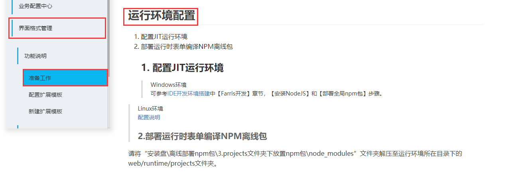
操作手册
IGIX二开
需要联系耿伟老师指导配置Maven库引用关系，正式库为maven-ba-release。
两点建议：最小化引入，只引入需要的，忌大而全的全部引入所有字段；建立公共的元数据，能使用公共的元数据就使用公共的，不要盲目建立。
无需删除引用检查的，不要选用引用检查功能，否则容易造成数据引用检查时发生异常。